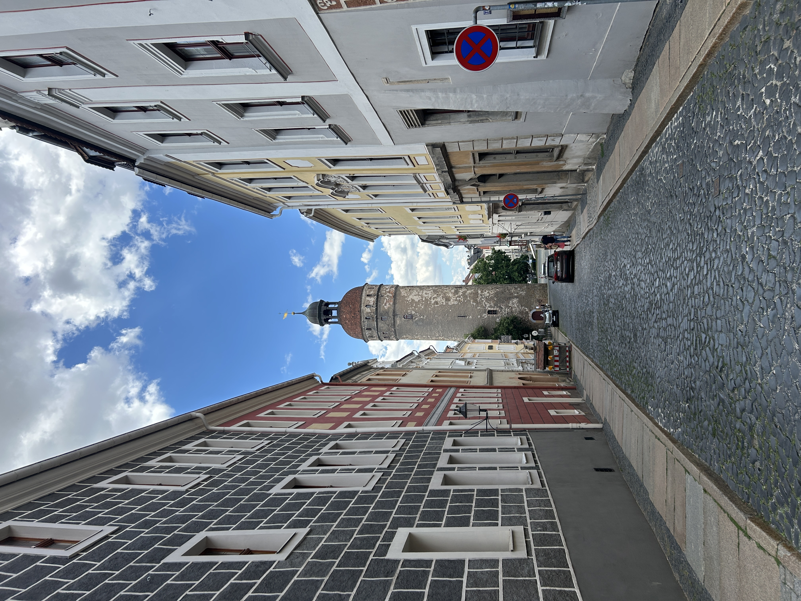
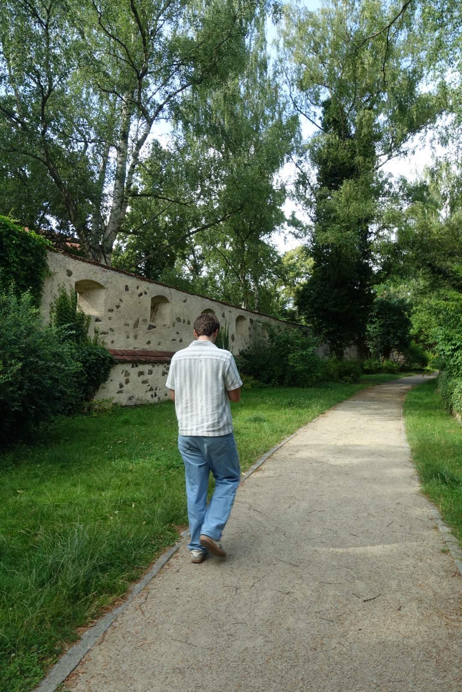
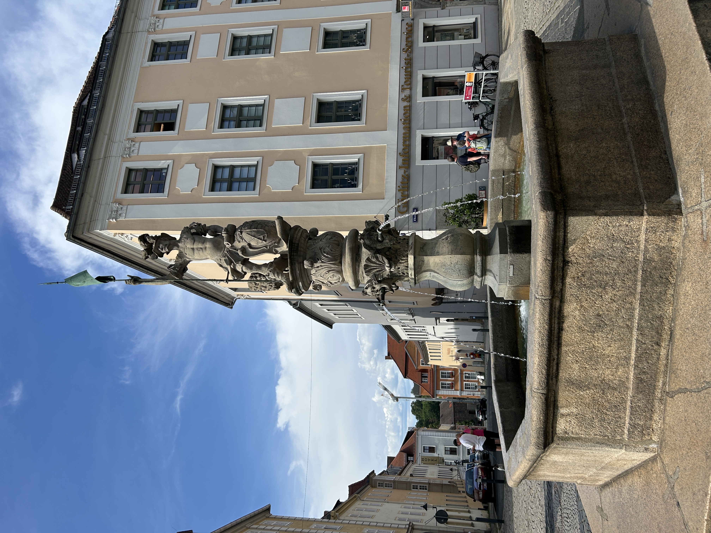
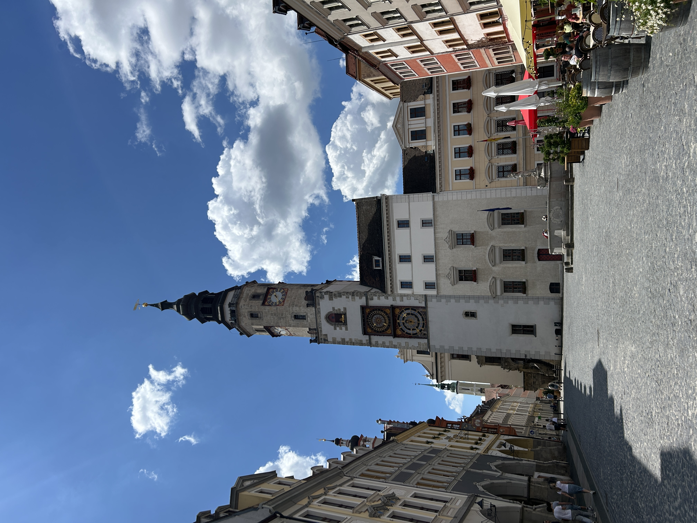

On the final day of my week in Europe, my wife and I took the train northward to a small town split in half by the German-Polish border. Gorlitz, Germany lies on the western side of the Lusatian Neisse, while its Polish counterpart, Zgorzelec, lies on the east.
The town was quiet and picturesque, with cobblestone streets and friendly people, very much in contrast to the bustling and overcrowded streets of Prague. Prior to the border changes following WWII, the city was entirely German, but, shortly after the war, the town was divided between the German Democratic Republic (East Germany) and the Polish People's Republic along rhe river that cuts through the city center. The German residents of the eastern part of the town were almost entirely expelled across the river.
For anyone wanting to visit two European countries in one day and escape the crowds in touristy cities, I highly recommend visiting these sister cities.


